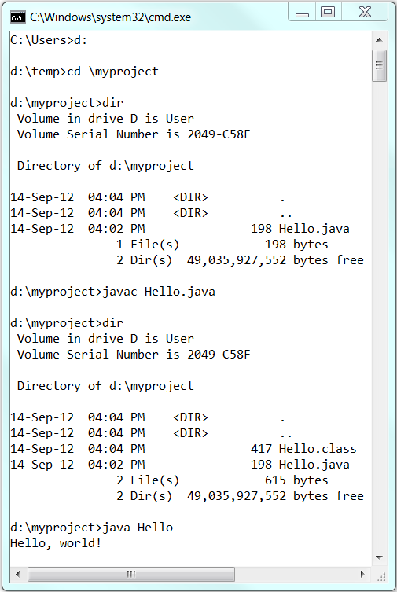
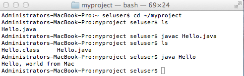
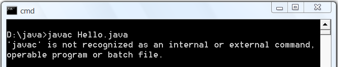
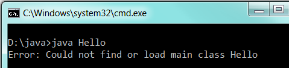
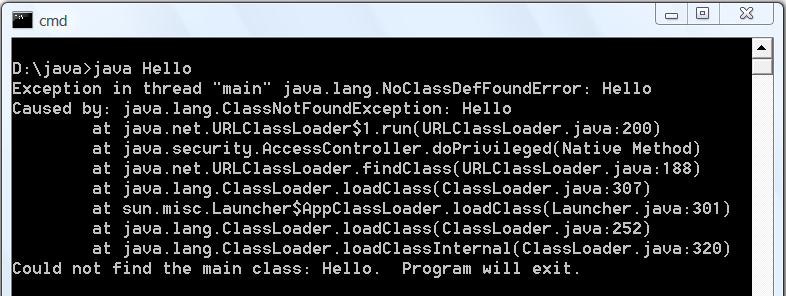
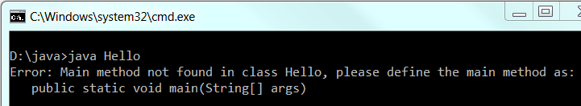

The Java Development Kit (JDK), officially named "Java Platform Standard Edition" or "Java SE", is needed for developing and running Java programs.
JDK Variants
Today, there are few variants of JDK:
- OpenJDK: Currently, the "OpenJDK" (@ https://openjdk.java.net/) developed by Oracle, Java community, Red Hat, Azul Systems, IBM, Microsoft, Amazon, Apple, SAP, provides a free and open-source Java Platform Standard Edition (or Java SE or JDK) official reference implementation. OpenJDK includes the virtual machine (HotSpot), the Java Class Library, and the Java Compiler. It does not include web-browser plugin and Web Start.
Popular OpenJDK builds includes Azul Zulu, Red Hat OpenJDK (IcedTea), Amazon Corretto, Eclipse Adoptium's Temurin, SapMachine, Microsoft OpenJDK, and more. - OracleJDK: This article is based on the "OracleJDK" (@ https://www.oracle.com/java/) (due to legacy), which is free for personal and development use but no longer free for commercial use.
The main difference between OpenJdk and OracleJDK is licensing. OpenJDK is completely open source with a GNU General Public License. OracleJDK requires a commercial license from Oracle. Since 2019, businesses need to purchase a commercial license in order to receive software updates.
JDK Versions
Reference: "Java Version History" @ https://en.wikipedia.org/wiki/Java_version_history.
- JDK Alpha and Beta (1995): Sun Microsystem announced Java in September 23, 1995.
- JDK 1.0 (January 1996): Originally called Oak (named after the oak tree outside James Gosling's office). Renamed to Java 1 in JDK 1.0.2.
- JDK 1.1 (February 1997): Introduced AWT event model, inner class, JavaBean, JDBC, and RMI.
- J2SE 1.2 (JDK 1.2) (December 1998): Re-branded as "Java 2" and renamed JDK to J2SE (Java 2 Standard Edition). Also released J2EE (Java 2 Enterprise Edition) and J2ME (Java 2 Micro Edition). Included JFC (Java Foundation Classes - Swing, Accessibility API, Java 2D, Pluggable Look & Feel, and Drag & Drop). Also introduced Collection Framework and JIT compiler.
- J2SE 1.3 (JDK 1.3) (May 2000): Introduced Hotspot JVM.
- J2SE 1.4 (JDK 1.4) (February 2002): Introduced
assertstatement, non-blocking IO (nio), logging API, image IO, Java webstart, regular expression (regex) support. - J2SE 5.0 (JDK 5) (September 2004): Officially called 5.0 instead of 1.5 (by dropping the 1.). Introduced generics, autoboxing/unboxing, annotation, enum, varargs, for-each loop, static import. See "JDK 5 New Features".
- Java SE 6 (JDK 6) (December 2006): Renamed J2SE to Java SE (Java Platform Standard Edition). No new language features. See "JDK 6 New Features".
- Java SE 7 (JDK 7) (July 2011): First version after Oracle purchased Sun Microsystem - also called OracleJDK. Introduced Strings in
switchstatement, Binary integer literals, allowing underscores in numeric literals, improved type inference for generic instance creation (or diamond operator<>), Catching multiple exception types and re-throwing exceptions with improved type checking. See "JDK 7 New Features". - Java SE 8 LTS (JDK 8) (March 2014): Included support for Lambda expressions, default and static methods in interfaces, improved collection, and JavaScript runtime. Also integrated JavaFX graphics subsystem. See "JDK 8 New Features".
- Java SE 9 (JDK 9) (September 21, 2017): Introduced modularization of the JDK (
module) under project Jigsaw, the Java Shell (jshell), and more. See "JDK 9 New Features". - Java SE 10 (18.3) (JDK 10) (March 2018): Introduced
varfor type inference local variable (similar to JavaScript). Introduced time-based release versioning with two releases each year, in March and September, denoted asYY.M.Removed native-header generation tooljavah. See "JDK 10 New Features". - Java SE 11 LTS (18.9) (JDK 11) (September 2018): Extended
varto lambda expression. Standardize HTTP client injava.net.http. Support TLS 1.3. Clean up the JDK and the installation package (removed JavaFX, JavaEE, CORBA modules, deprecated Nashorn JavaScript engine). OracleJDK is no longer free for commercial use, but OpenJDK is still free. See "JDK 11 New Features". - Java SE 12 (19.3) (JDK 12) (March 2019): See "JDK 12 New Features".
- Java SE 13 (19.9) (JDK 13) (September 2019): See "JDK 13 New Features".
- Java SE 14 (20.3) (JDK 14) (March 2020): Switch Expressions (standard)
- Java SE 15 LTS (20.9) (JDK 15) (September 2020): Text Blocks (standard)
- Java SE 16 (JDK 16) (March 2021): Record (standard)
- Java SE 17 LTS (JDK 17) (September 2021): Sealed Classes (standard)
- Java SE 18 (JDK 18) (March 2022):
- Java SE 19 (JDK 19) (September 2022):
- Java SE 20 (JDK 20) (March 2023):
- Java SE 21 LTS (JDK 21) (September 2023): Record Pattens (standard), Pattern Matching for switch (standard), String Template (preview).
- Java SE 22 (JDK 22) (March 2024):
"JDK" or "JRE"?
JRE (Java Runtime), which include a Java Virtual Machine and core libraries, is needed for running Java programs. JDK (Java Development Kit), which includes JRE plus the development tools (such as compiler and debugger), is need for developing and running Java programs. In other words, JRE is a subset of JDK. Since you are supposed to write Java Programs instead of merely running Java programs, you should install JDK, which includes JRE.
How To Install JDK on Windows
Step 0: Un-Install Older Version(s) of JDK/JRE
I recommend that you install only the latest JDK. Although you can install multiple versions of JDK/JRE concurrently, it is messy.
If you have previously installed older version(s) of JDK/JRE, un-install ALL of them. Goto "Control Panel" ⇒ (optional) "Programs" ⇒ "Programs and Features" ⇒ Un-install ALL programs begin with "Java", such as "Java SE Development Kit ...", "Java SE Runtime ...", "Java X Update ...", and etc.
Step 1: Download JDK
- Goto JDK (or Java SE) download site @ https://www.oracle.com/java/technologies/downloads/.
- Choose "JDK 21" ⇒ "Windows" ⇒ Download "x64 Installer" (e.g., "
jdk-21_windows-x64_bin.exe" - about 167MB).
Step 2: Install JDK
Run the downloaded installer. Accept the defaults and follow the screen instructions to complete the installation. By default, JDK is installed in directory "C:\Program Files\Java\jdk-21".
Launch "File Explorer". Navigate to "C:\Program Files\Java" to inspect this directories. Take note of your JDK Installed Directory jdk-21.
I shall refer to the JDK Installed Directory as <JAVA_HOME>, hereafter, in this article (corresponding to environment variable %JAVA_HOME% in Windows or $JAVA_HOME in Unix/macOS).
Step 3: (SKIP this Step for JDK 15 onwards, GOTO Step 4 - Kept here for completeness) Include JDK's "bin" Directory in the PATH
Windows' Command Prompt (CMD) searches the current directory and the directories listed in the PATH environment variable for executable programs.
JDK's programs (such as Java compiler "javac.exe" and Java runtime "java.exe") reside in the sub-directory "bin" of the JDK installed directory. JDK's "bin" needs to be added into the PATH.
Prior to JDK 15, you need to explicitly add JDK's "bin" into the PATH. Starting from JDK 15, the installation process adds the directory "C:\Program Files\Common Files\Oracle\Java\javapath" to the PATH. The "javapath" directory is a link to "javapath_target_xxxxxx", which contains a copy of the following JDK programs:
java.exe: Java Runtimejavac.exe: Java Compilerjavaw.exe: Java Runtime for Windows Console-lessjshell.exe: Java Command-line Shell (since JDK 10) - a Read-Evaluate-Print Loop (REPL) which evaluates declarations, statements, and expressions as they are entered and immediately shows the results.
Link is used so that you can keep multiple copies (versions) of JDK.
To edit the PATH environment variable in Windows 10:
- Launch "Control Panel" ⇒ (Optional) "System and Security" ⇒ "System" ⇒ Click "Advanced system settings" on the left pane.
- Switch to "Advanced" tab ⇒ Click "Environment Variables" button.
- Under "System Variables" (the bottom pane), scroll down to select variable "Path" ⇒ Click "Edit...".
- For Newer Windows 10:
You shall see a TABLE listing all the existing PATH entries (if not, goto next step). Click "New" ⇒ Click "Browse" and navigate to your JDK's "bin" directory, i.e., "c:\Program Files\Java\jdk-15.0.{x}\bin", where{x}is your installation update number ⇒ Select "Move Up" to move this entry all the way to the TOP. - For Older Windows 10 (Time to change your computer!):
(CAUTION: Read this paragraph 3 times before doing this step! Don't push "Apply" or "OK" until you are 101% sure. There is no UNDO!!!)
(To be SAFE, copy the content of the "Variable value" to Notepad before changing it!!!)
In "Variable value" field, APPEND "c:\Program Files\Java\jdk-15.0.{x}\bin" (where{x}is your installation update number) IN FRONT of all the existing directories, followed by a semi-colon (;) to separate the JDK's bin directory from the rest of the existing directories. DO NOT DELETE any existing entries; otherwise, some existing applications may not run.Variable name : PATH Variable value : c:\Program Files\Java\jdk-15.0.{x}\bin;[do not delete exiting entries...]
You need to re-started CMD for the new environment settings to take effect.
Step 4: Verify the JDK Installation
Launch a CMD via one of the following means:
- Click "Search" button ⇒ Type "cmd" ⇒ Choose "Command Prompt", or
- Right-click "Start" button ⇒ run... ⇒ enter "cmd", or
- Click "Start" button ⇒ Windows System ⇒ Command Prompt
Issue the following commands to verify your JDK installation:
- (Skip for JDK 15 onwards) Issue "
path" command to list the contents of thePATHenvironment variable. Check to make sure that your JDK's "bin" is listed in thePATH.path PATH=c:\Program Files\Java\jdk-{xx.y.z}\bin;other entries... - Issue the following commands to verify that JDK/JRE are properly installed and display their version:
// Display the JDK version javac -version javac 21.0.1 // Display the JRE version java -version java version "21.0.1" 2023-10-17 LTS Java(TM) SE Runtime Environment (build 21.0.1+12-LTS-29) Java HotSpot(TM) 64-Bit Server VM (build 21.0.1+12-LTS-29, mixed mode, sharing)
Step 5: Write a Hello-World Java Program
- Create a directory to keep your works, e.g., "
d:\myProject" or "c:\myProject". Do NOT save your works in "Desktop" or "Documents" as their directory path are hard to locate. Your directory name should not contain blank or special characters. Use meaningful but short name as it is easier to type. - Launch a programming text editor (such as Sublime Text, Atom). Begin with a new file and enter the following source code. Save the file as "
Hello.java", under your work directory (e.g.,d:\myProject)./* * First Java program to say Hello */ public class Hello { // Save as "Hello.java" under "d:\myProject" public static void main(String[] args) { System.out.println("Hello, world!"); } }
Step 6: Compile and Run the Hello-World Java Program
To compile the source code "Hello.java":
- Start a CMD Shell (Search ⇒ enter "cmd" ⇒ select "Command Prompt").
- Set the Current Drive to the drive where you saved your source file "
Hello.java".
If you use drive "c", skip this step.
Else if you use drive "d", enter "d:" as follow:d: D:\xxx> - Set the Current Working Directory to the directory that you saved your source file via the
cd(Change Directory) command. For example, suppose that your source file is saved in directory "myProject".
cd \myProject D:\myProject> - Issue a
dir(List Directory) command to confirm that your source file is present in the current directory.dir ...... xx-xxx-xx xx:xx PM 277 Hello.java ...... - Invoke the JDK compiler "
javac" to compile the source code "Hello.java".javac Hello.java // If error message appears, correct your source code and re-compileThe compilation is successful if the command prompt returns. Otherwise, error messages would be shown. Correct the errors in your source file and re-compile. Check "Common JDK Installation Errors", if you encounter problem compiling your program. - The output of the compilation is a Java class called "
Hello.class". Issue adir(List Directory) command again to check for the output.dir ...... xx-xxx-xx xx:xx PM 416 Hello.class xx-xxx-xx xx:xx PM 277 Hello.java ......
To run the program, invoke the Java Runtime "java":
java Hello
Hello, world!
Everything that can possibly go wrong will go wrong: Read "JDK Installation Common Errors".
Step 7: (For Advanced Users Only) JDK's Source Code
Source code for JDK is provided and kept in "<JAVA_HOME>\lib\src.zip" (or "<JAVA_HOME>\src.zip" prior to JDK 9). I strongly recommend that you to go through some of the source files such as "String.java", "Math.java", and "Integer.java", under "java\lang", to learn how experts program.
How to Install JDK on macOS
Step 1: Check if JDK has been Pre-Installed
To check if JDK has been installed, open a "Terminal" (Search "Terminal"; or Finder ⇒ Go ⇒ Utilities ⇒ Terminal) and issue this command:
javac -version
- If a JDK version number is returned (e.g.,
JDK x.x.x), then JDK has already been installed. If the JDK version is prior to 11, proceed to Step 2 to install the latest JDK; otherwise, proceed to "Step 3: Write a Hello-world Java program". - If message "command not found" appears, JDK is NOT installed. Proceed to the "Step 2: Install JDK".
- If message "To open javac, you need a Java runtime" appears, select "Install" and follow the instructions to install JDK. Then, proceed to "Step 3: Write a Hello-world Java program".
Step 2: Download JDK
- Goto JDK (or Java SE) download site @ https://www.oracle.com/java/technologies/downloads/.
- Choose "JDK 21" ⇒ "macOS" ⇒
- If your mac is using the "M1/M2" ARM processor, download the "ARM64 DMG Installer".
- If you mac is using the "Intel" processor, download the "x64 DMG Installer".
Step 3: Install JDK/JRE
- Double-click the downloaded Disk Image (DMG) file. Follow the screen instructions to install JDK/JRE.
- Eject the DMG file.
- To verify your installation, open a "Terminal" and issue these commands.
// Display the JDK version javac -version javac 21.0.1 // Display the JRE version java -version java version "21.0.1" ...... // Display the location of Java Compiler which javac /usr/bin/javac // Display the location of Java Runtime which java /usr/bin/java
Step 3: Write a Hello-World Java Program
- Create a directory called "
myProject" under your "home" directory (Launch "Finder" ⇒ "Go" ⇒ "Home"; Select "File" ⇒ "New Folder" ⇒ "myProject").
In macOS/Unix, the "home" directory of the current user can be referenced as "~". Hence, this new directory can be referenced as "~/myProject". - Use a programming text editor (such as Sublime Text or Atom) to input the following source code and save as "
Hello.java" under the directory "~/myProject".
(If you use macOS's default text editor "TextEdit" (NOT recommended), you need to open a new file ⇒ choose "Format" ⇒ "Make Plain Text" ⇒ Enter the source code ⇒ Save as "Hello.java".)/* * My First Java program to say Hello */ public class Hello { // Save as "Hello.java" under "~/myProject" public static void main(String[] args) { System.out.println("Hello, world from Mac!"); } }
Step 4: Compile and Run the Hello-World Java Program
- To compile the source code "
Hello.java", open a new "Terminal" ("Go" ⇒ "Utilities" ⇒ "Terminal") and issue these commands (as illustrated):// Change Directory (cd) to where "Hello.java" resides cd ~/myProject // Check if "Hello.java" exists using list (ls) command ls Hello.java ...... // Compile "Hello.java" using JDK compiler "javac" javac Hello.java // If error message appears, correct your source code and re-compile // Check for the compiled output "Hello.class" ls Hello.class Hello.java ......
- To run the Hello-world, invoke the Java Runtime "
java" as follows:java Hello Hello, world from Mac!
How to Install OpenJDK on Ubuntu
(Tested on Ubuntu 22.04LTS with OpenJDK 19.)
Step 0: Check if JDK has already been Installed
Open a Terminal and issue this command:
$ javac -version
Command 'javac' not found, but can be installed with:
sudo apt install openjdk-11-jdk-headless # version 11.0.19+7, or
sudo apt install default-jdk # version 2:1.11-72build2
sudo apt install ecj # version 3.16.0-1
sudo apt install openjdk-17-jdk-headless # version 17.0.7+7
sudo apt install openjdk-18-jdk-headless # version 18.0.2+9
sudo apt install openjdk-19-jdk-headless # version 19.0.2+7
sudo apt install openjdk-8-jdk-headless # version 8u372-ga
If a JDK version number (e.g., "javac x.x.x") appears, JDK has already been installed. Otherwise, the above messages appear. However, the "default-jdk" installs OpenJDK 11 (at /usr/lib/jvm/java-11-openjdk-amd64), which is old.
Note: You may remove OpenJDK via:
$ sudo apt purge openjdk-\*
Step 1: Install Latest OpenJDK from the Mother Site
Instead, we shall get the latest OpenJDK from the mother site (at https://openjdk.org/). Download the latest OpenJDK from https://jdk.java.net/20/, i.e., "opendjk-20.0.1_linux-x64_bin.tar.gz". Install into "/usr/lib/jvm" (which is where the default JDK was to be installed) as follows:
$ cd /usr/lib $ sudo mkdir jvm $ cd jvm $ sudo tar xzfv ~/Downloads/opendjk-20.0.1_linux-x64_bin.tar.gz
Step 2: Managing Multiple Java's with "Alternatives"
You can have multiple Java on one machine. You can configure which version is the default for use on the command line by using the "alternatives" system as follows:
// Install an alternative for commands "javac", "java", and "jshell" issued from command-line. $ sudo update-alternatives --install /usr/bin/java java /usr/lib/jvm/jdk-20.0.1/bin/java 1 // --install <symlink> <command-name> <path> <priority> $ sudo update-alternatives --install /usr/bin/javac javac /usr/lib/jvm/jdk-20.0.1/bin/javac 1 $ sudo update-alternatives --install /usr/bin/jshell jshell /usr/lib/jvm/jdk-20.0.1/bin/jshell 1 // Check all the alternatives installed for the commands $ sudo update-alternatives --config javac //... list all alternatives for command "javac" ... // Same for "java" and "jshell" // Set one of the alternatives as default $ sudo update-alternatives --set javac /usr/lib/jvm/jdk-20.0.1/bin/javac // --set <command-name> <path> // Same for "java" and "jshell" // Try the commands and check their source $ javac -version $ whereis javac $ which javac $ java -version
How "Alternatives" Work
The above steps set up symlinks java, javac, jshell at /usr/bin (which is in the PATH), that link to /etc/alternatives and then to JDK bin directory. The "alternatives" system aims to resolve the situation where several programs fulfilling the same function (e.g., different version of JDKs). It sets up symlinks thru /etc/alternatives to refer to the default programs to be used.
$ ls -ld /usr/bin/java* lrwxrwxrwx 1 root root xx xxx xx xx:xx /usr/bin/java -> /etc/alternatives/java ...... $ ls -ld /etc/alternatives/java* lrwxrwxrwx 1 root root xx xxx xx xx:xx /etc/alternatives/java -> /usr/lib/jvm/jdk-20.0.1/bin/java ...... // As the result java -> /usr/bin/java (thru PATH) -> /etc/alternatives/java -> /usr/lib/jvm/jdk-20.0.1/bin/java (actual program)
Alternatively, you can include the JDK's "bin" directory into the PATH directly by editing /etc/environment (see the step below).
JAVA_HOME="/usr/lib/jvm/jdk-20.0.1"
PATH=$JAVA_HOME/bin:$PATH
Step 3: Set the JAVA_HOME Environment Variable
- Start the nano editor to edit "
/etc/environment":$ sudo nano /etc/environment
- Append the
JAVA_HOMEdefinition at the end of the file. Do NOT include the "bin" sub-directory.JAVA_HOME="/usr/lib/jvm/jdk-20.0.1" - Reload this file to apply the changes to your current session:
$ source /etc/environment
- Verify that the environment variable is set correctly:
$ echo $JAVA_HOME
Step 3: Compile and Run a Hello-world Java Program
- File Explorer ⇒ Home ⇒ Create a new folder called "
myProject" to keep our works. - Open "Text Editor" (gedit). Enter the following source code and save as "
Hello.java" under the "~/myProject" directory created earlier.public class Hello { // To save as "Hello.java" under "~/myProject" public static void main(String[] args) { System.out.println("Hello, world from Ubuntu!"); } } - To compile the Hello-world Java program, launch a Terminal and issue these commands:
// Change directory to where the source code resides $ cd ~/myProject // List the contents of current directory. Check for "Hello.java" $ ls ...... Hello.java ...... // Compile "Hello.java" into "Hello.class" $ javac Hello.java // Check for "Hello.class" $ ls ...... Hello.class ......
- Run the Hello-world Java program:
// Run "Hello.class" $ java Hello Hello, world from Ubuntu!
Notes: Starting from JDK 11, you can compile and run the hello-world in one single step via:
// Compile and Run "Hello.java" in one step without creating the ".class" $ java Hello.java Hello, world from Ubuntu!
Install OracleJDK
You can install OracleJDK using the same steps. You can download the OracleJDK's tarball from Oracle site at https://www.oracle.com/java/technologies/javase-downloads.html.
Source-Code Editors & IDEs for Java Programming
Eclipse IDE
See "Eclipse" article.
NetBeans IDE
See "NetBeans" article.
Visual Studio (VS) Code IDE
See "VS Code" article.
Sublime Text (for Windows, macOS, Linux)
Click HERE, look for "Sublime Text for Java Programming"
Atom (for Windows, macOS, Linux)
[TODO]
TextPad (for Windows only)
Click HERE, look for "TextPad for Java Programming".
NotePad++ (for Windows only)
Click HERE, look for "NotePad++ for Java Programming".
(JDK 11 New Feature) Launch Single-Source-File
From JDK 11, you can "compile and run" a single-file Java program in one step, without explicit compilation.
- Write a "
Hello.java" (see previous section). - Delete "
Hello.class", if it exists. - You can compile/run "
Hello.java" in one command as follows:// Change directory to the directory containing Hello.java // Compile and Run in ONE command java Hello.java Hello, world!
Notes:
- This is applicable to single source-file only.
- No need to use
javacto compile the program. - It compiles in memory (without producing a
.classfile), and run. - This feature is introduced for beginners to learn Java, and for professionals to test a Java feature.
- The filename and classname need not be the same.
How To Set JAVA_HOME Environment Variable
Many Java applications (such as Tomcat) require the environment variable JAVA_HOME to be set to the JDK installed directory.
See "How to set JAVA_HOME for Windows" or "How to set JAVA_HOME for macOS/Linux".
Common Errors in installing JDK
SYMPTOM: Cannot compile Java program from the CMD shell (e.g., "javac Hello.java" does not work!) ERROR MESSAGE: 'javac' is not recognized as an internal or external command, operable program or batch file. PROBABLE CAUSES: The PATH environment variable, which maintains a list of search paths for executable programs (including "javac.exe"), does not include JDK's bin directory. POSSIBLE SOLUTIONS: 1) Start a CMD shell (click "Start" button ⇒ "run..." ⇒ enter "cmd") and issue a path command: prompt> path PATH=....... 2) Check if it includes your JDK's "bin" directory. For example, suppose that your JDK is installed in "c:\program files\java\jdk-15.0.1", then PATH should include "c:\program files\java\jdk-15.0.1\bin". Otherwise, include JDK's bin directory in the PATH environment variable. Read "Step 3 of How to install JDK".
 
SYMPTOM: Can compile but cannot run Java program from the CMD shell (e.g., "java Hello" does not work!) ERROR MESSAGE (Post JDK 1.7): Error: Could not find or load main class Xxx ERROR MESSAGE (Pre JDK 1.7): Exception in thread "main" java.lang.NoClassDefFoundError: Xxx PROBABLE CAUSES: 1) The Java class (in this example, Hello.class) is NOT in the current directory. 2) The CLASSPATH environment variable is set, but does not include the current directory ".". POSSIBLE SOLUTIONS: 1) Issue a "dir" command to list the contents of the current directory. Check that it contains the Java class to be run (e.g., Hello.class). You need to compile the source program (".java") to get the class file (".class"). 2) If the Java class is present in the current directory, issue a "set classpath" command to check its settings: prompt> set classpath CLASSPATH=....... If you receive the message "Environment variable CLASSPATH not defined" and your program is correct, I can't help you here. Otherwise, if the CLASSPATH is defined, for beginner, I suggest that you remove the CLASSPATH environment variable. From "Control Panel" ⇒ System ⇒ (Vista only) Advanced system settings ⇒ Switch to "Advanced" tab ⇒ Environment Variables ⇒ System variables (and also User variables) ⇒ Select variable "CLASSPATH" ⇒ Delete (Delete from both the System variables and User variables) 3) (For Advanced Users Only) If CLASSPATH is not set, it is defaulted to the current directory. However, if CLASSPATH is set, the current directory is NOT implicitly included. You can include the current directory (denoted by a single dot ".") in front of the existing class-paths. Read "Java Applications and Environment Variable" for more discussion on CLASSPATH.

SYMPTOM: Can compile but cannot run the Hello-world program (e.g., "java Hello" does not work!)
ERROR MESSAGE (Post JDK 1.7): Error: Main method not found in class Hello.
POSSIBLE SOLUTIONS: Check whether there is a main() method in your program, and the signature of your main()
as shown in the error message.
(Advanced) External JAR Files and Native Libraries
Notes: This section is applicable to JDK prior to JDK 9. JDK 9 introduces a new level called "module" on top of package, and "jmod" files for Java modules. Need to revise this section for JDK 9.
External Java API packages (such as Servlet API, MySQL Connector/J, JOGL, JUnit) are often distributed in JAR files (Java Archive - a single-file package of many Java classes similar to ZIP or TAR), with possibly Native Libraries (".lib" and ".dll" in Windows, or ".a" and ".so" in Linux/macOS).
External JAR Files (".jar")
If external JAR files are not properly included:
- During the compilation, you will receive compilation error "cannot find symbol" for classes belonging to the external packages.
- During execution, you will get a runtime error "Could not find or load main class xxx" or "
NoClassDefFoundError".
To include external JAR files, you can either:
- (Prior to JDK 9) Copy all the JAR files of the external packages to the Java's Extension Directories (NOT applicable from JDK 9).
- For Windows, the JDK extension directory is located at "
<JAVA_HOME>\jre\lib\ext" (e.g., "c:\Program Files\Java\jdk1.8.0_xx\jre\lib\ext"). - For macOS, the JDK extension directories are "
/Library/Java/Extensions" and "/System/Library/Java/Extensions". - For Ubuntu, the JDK extension directories are "
<JAVA_HOME>/jre/lib/ext" (e.g., "/usr/user/java/jdk1.8.0_xx/jre/lib/ext") and "/usr/java/packages/lib/ext".
java.ext.dirs". You can print its contents viaSystem.out.println(System.getProperty("java.ext.dirs")). - For Windows, the JDK extension directory is located at "
- You can also include all the JAR files in the
CLASSPATHenvironment variable.CLASSPATHmay contain directories (of Java classes) or JAR files (single-file archive of Java classes). If you set theCLASSPATH, you must also include the current directory (denoted as ".").- For Windows, set the
CLASSPATHin Control Panel ⇒ System ⇒ Advanced system settings ⇒ Advanced ⇒ Environment Variables ⇒ System Variables ⇒ New ⇒ In "Variable name", enter "CLASSPATH" ⇒ In "Variable value", enter ".;path1\xxx.jar;path2\yyy.jar", where the entries are separated by a semi-colon (;). - For Linux and macOS: Edit
~/.profileor~/.bash_profile(or/etc/profilefor system-wide setting) to include the following line at the end of the file:export CLASSPATH=.:path1/xxx.jar:path2/yyy.jar
The entries are separated by colon (:).
- For Windows, set the
- You can also set the
CLASSPATHin thejavac/javacommand-line via the option-cp <paths>(or-classpath <paths>), for example,// For Windows // Compile Java source code javac -cp .;path1\xxx.jar;path2\yyy.jar ClassName.java // Run Java class java -cp .;path1\xxx.jar;path2\yyy.jar ClassName // For macOS and Ubuntu // Compile Java source code javac -cp .:path1/xxx.jar:path2/yyy.jar ClassName.java // Run Java class java -cp .:path1/xxx.jar:path2/yyy.jar ClassName
External Native Libraries (".lib", ".dll", ".a", ".so")
Some external package may provide static or shared native libraries in the form of ".lib" (Windows' static LIBrary), ".dll" (Windows' Dynamically Link Library), ".a" (Unix's static (Archive) library), or ".so" (Unix's Shared Object library).
Native Libraries are to be kept in a directory accessible via JRE's Property "java.library.path", which normally but not necessarily includes all the directories in the PATH environment variable.
Native libraries are not involved in the compilation. But if they are not properly included during runtime time, you will get a runtime error "java.lang.UnsatisfiedLinkError: no xxx in java.library.path".
To include external native libraries:
- Copy the native libraries into a system library directory, e.g.,
c:\windows\system32(Windows),/usr/libor/usr/local/lib(macOS/Unix). You can verify that the directory is included in Java's System Property "java.library.path", viaSystem.out.println(System.getProperty("java.library.path")). - You can also set the native library path via the
java's command-line option-Djava.library.path=xxx, for example,// Run a Java program java -Djava.library.path=xxx ClassName
Eclipse/NetBeans
Using an IDE can greatly simplifies inclusion of external packages. Read "Eclipse How-To" or "NetBeans How-To".
Link To Java References & Resources